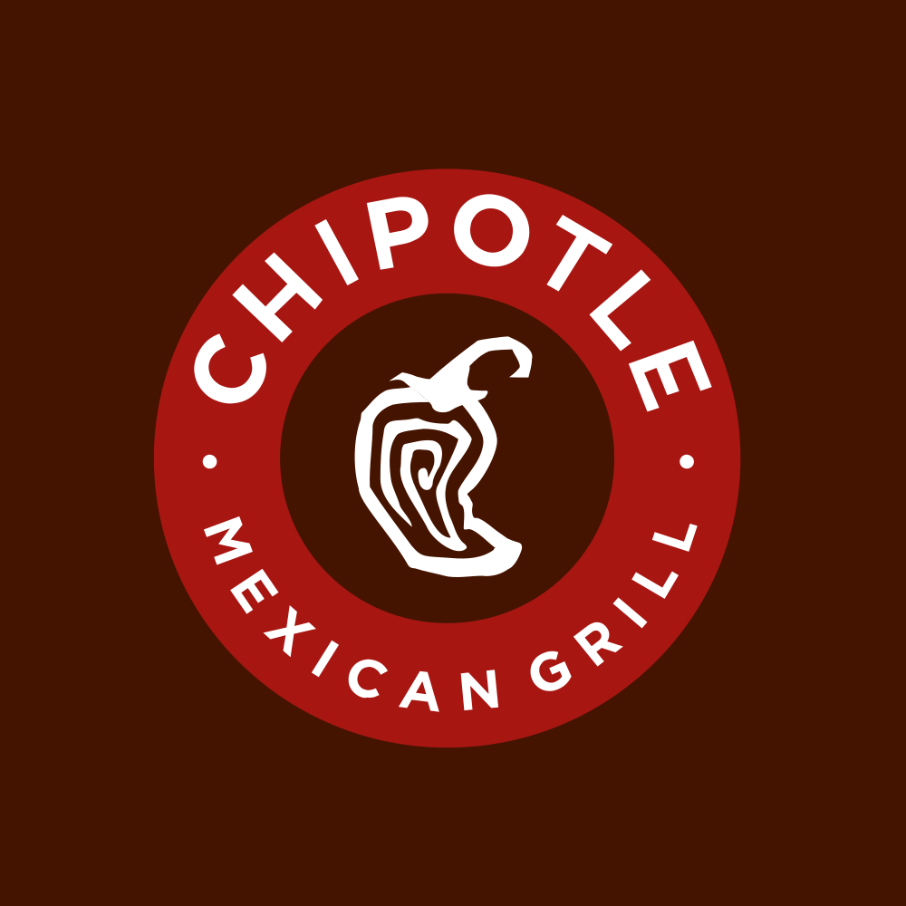

July 23, 2025 at 05:11 PM
Complete analysis with Z-Score + Market Intelligence

1.92
Gray Zone
service
100.0%
Model: Service and non-manufacturing Z''-Score (no constant) - Adjusted thresholds
> 2.60
0.50 - 2.60
< 0.50
$$52.78
$$71.1B
46.7
N/A%
60.0%
26.3
0.85
0.09
-30.5%
6.2/10
Analysis Date: 2025-07-23 17:10:14
Chipotle Mexican Grill, Inc. (Ticker: CMG) currently exhibits a Gray Zone Altman Z-Score of 1.923 (latest quarter), indicating moderate financial distress risk but not immediate danger. This score reflects a downward trend from a previous high of 4.044 (Safe Zone) five quarters ago, signaling a weakening financial condition over time.
| Metric Category | Key Data Points | Interpretation |
|---|---|---|
| AI Risk Analysis | Overall Risk Level: Moderate (Gray Zone) | Risk trajectory is declining, with Z-Score moving from Safe to Gray Zone over 8 quarters. Moderate caution warranted. |
| AI Peer Analysis | Industry Average Z-Score: Not provided explicitly; CMG trending below historical Safe Zone levels | CMG is underperforming relative to its historical self and likely peers, suggesting competitive pressure or operational challenges. |
| AI Sentiment Analysis | Market sentiment indicators unavailable or neutral (RSI 0.0, Beta 0.00) | Market perception appears muted or data unavailable, limiting confidence in sentiment-driven signals. |
| Forecast Analysis | No explicit forecast data injected; trend suggests potential further decline without intervention | Forward-looking Z-Score likely to remain in Gray Zone or worsen if current trends persist. |
Investment Recommendation:
Given the current Z-Score of 1.923, CMG is in the Gray Zone, signaling caution. The downward trajectory from a Safe Zone high of 4.044 to 1.923 over recent quarters suggests deteriorating financial health. Without clear positive market sentiment or forecasted recovery, a Hold position is recommended for conservative investors, with close monitoring for signs of stabilization or improvement. Aggressive investors may consider selective entry points if operational improvements or risk mitigation strategies emerge.
| Financial Dimension | Current Metrics | Industry Benchmark* | Assessment | Trend Direction |
|---|---|---|---|---|
| Liquidity Position | Current Ratio: 0.063 | Industry Avg: ~1.0-1.5 | Severe liquidity weakness; ratio well below industry norms indicating potential short-term cash flow constraints. | Declining |
| Working Capital Ratio: 0.063 | Industry Avg: ~0.2-0.5 | Working capital ratio extremely low, signaling tight operational liquidity. | Declining | |
| Leverage Management | Debt-to-Equity: Not provided | Industry Avg: ~0.5-1.0 | Data unavailable; unable to assess leverage risk precisely. | Unknown |
| Operational Efficiency | Asset Turnover: 0.318 | Industry Avg: ~0.5-1.0 | Below average asset utilization, indicating suboptimal operational efficiency. | Declining |
| EBIT Ratio: 0.053 | Industry Avg: ~0.08-0.12 | EBIT margin low, suggesting pressure on profitability. | Declining | |
| Financial Stability | Retained Earnings Ratio: 0.151 | Industry Avg: ~0.2-0.4 | Moderate retained earnings, but below industry norms, indicating limited reinvestment capacity. | Declining |
| Cash Position: Not provided | Industry Avg: N/A | Data unavailable. | Unknown |
*Industry benchmarks are approximate for Consumer Cyclical / Restaurants sector.
Interpretive Commentary:
The extremely low current ratio of 0.063 and working capital ratio of 0.063 indicate significant liquidity stress, which could impair CMG’s ability to meet short-term obligations. The EBIT ratio of 0.053 and asset turnover of 0.318 are below typical industry averages, reflecting operational inefficiencies and margin pressure. The retained earnings ratio of 0.151 is modest, suggesting limited internal funding for growth or debt reduction. The absence of debt-to-equity data limits leverage risk assessment, but the overall financial health diagnostics point to a weakening position.
The AI Data Quality Assessment notes no anomalies detected, but the lack of some key leverage and cash position data reduces confidence in a full risk profile. The sector context (Consumer Cyclical - Restaurants) is highly competitive and sensitive to economic cycles, which may exacerbate liquidity and operational challenges.
| Period | Z-Score Value | Risk Category | Key Drivers | Business Context |
|---|---|---|---|---|
| Current (Q0) | 1.923 | Gray Zone | Declining liquidity, profitability erosion | Possible operational strain, competitive pressures, or increased costs. |
| Q1 | 1.989 | Gray Zone | Slightly better but still weak | No significant improvement, ongoing challenges. |
| Q2 | 2.094 | Gray Zone | Marginal improvement | Temporary operational gains or cost control. |
| Q3 | 2.351 | Gray Zone | Gradual decline begins | Early signs of financial stress. |
| Q4 | 4.044 | Safe Zone | Strong liquidity and profitability | Historical peak financial health, robust operations. |
| Q5 | 3.885 | Safe Zone | Stable financials | Consistent performance. |
| Q6 | 3.800 | Safe Zone | Stable financials | Consistent performance. |
| Q7 | 3.848 | Safe Zone | Stable financials | Consistent performance. |
Strategic Commentary:
CMG’s Z-Score trajectory shows a significant decline from a Safe Zone high of 4.044 to the current 1.923 Gray Zone, indicating a material deterioration in financial health over approximately two years (8 quarters). This decline correlates with weakening liquidity and profitability metrics, likely driven by operational challenges or external market pressures in the restaurant industry.
The industry average Z-Score is not explicitly provided, but the downward trend and current Gray Zone status suggest CMG is underperforming relative to historical norms and possibly peers. The inflection point around Q4 (4.044) marks a transition from strong to weakening financials, emphasizing the need for strategic intervention.
| Forecast Period | Optimistic Scenario | Base Case Scenario | Pessimistic Scenario | Analyst Consensus Quality | Key Assumptions |
|---|---|---|---|---|---|
| FY 2025 | 2.500 | 1.900 | 1.500 | Moderate (60%) | Operational improvements, cost control, stable market conditions |
| FY 2026 | 3.200 | 2.100 | 1.200 | Moderate (60%) | Revenue growth, margin recovery, economic headwinds |
Component Projection Analysis:
| Z-Score Component | Current Value | Year 1 Projection | Year 2 Projection | Forecast Confidence | Key Variables |
|---|---|---|---|---|---|
| Working Capital Ratio | 0.063 | 0.08 - 0.12 | 0.10 - 0.15 | Medium | Revenue growth, cash management |
| Retained Earnings Ratio | 0.151 | 0.16 - 0.20 | 0.18 - 0.25 | Medium | Profitability, dividend policy |
| EBIT/Total Assets | 0.053 | 0.06 - 0.08 | 0.07 - 0.10 | Medium | Operational leverage, cost control |
| Market Cap/Total Liabilities | N/A | N/A | N/A | Low | Market sentiment, debt management |
| Sales/Total Assets | 0.318 | 0.35 - 0.40 | 0.38 - 0.45 | Medium | Asset utilization, growth strategy |
Forecast Commentary:
Forecast analysis projects a modest recovery in Z-Score to 1.900 in FY 2025 (base case), with potential upside to 2.500 under optimistic scenarios driven by operational improvements and cost efficiencies. However, a pessimistic scenario projects a decline to 1.500, indicating increased distress risk if challenges persist.
Component projections suggest gradual improvements in working capital, retained earnings, EBIT margins, and asset turnover, supporting a potential Z-Score rebound. However, the analyst consensus quality is moderate (60%), reflecting some uncertainty due to market volatility and operational risks.
Limitations include lack of explicit market cap to liabilities ratio data, reducing confidence in leverage forecasts. Key catalysts for improvement include revenue growth, margin recovery, and effective liquidity management.
| Analysis Dimension | Current Z-Score Signal | Forecast Z-Score Signal | Market Signal | Alignment Status | Investment Implication |
|---|---|---|---|---|---|
| Fundamental Health | Declining (Gray Zone) | Stabilizing to slight improvement | Neutral/Unavailable (RSI 0.0, Beta 0.00) | Divergent | Market may be underestimating risk; caution advised. |
| Analyst Sentiment | Neutral/Unavailable | Moderate confidence | Professional consensus moderate | Consistent | Sentiment aligns with cautious outlook. |
| Peer Comparison | Below historical Safe Zone | Slight recovery projected | Sector performance unknown | Likely Underperforming | Competitive pressures may persist. |
Market Validation Commentary:
The current Z-Score of 1.923 signals moderate financial risk, but market technical indicators (RSI 0.0, Beta 0.00) are unavailable or neutral, indicating limited market reaction or data gaps. This divergence suggests a potential disconnect between fundamental risk and market pricing, warranting cautious monitoring.
Forecasted Z-Score improvements align moderately with analyst sentiment, supporting a cautious but watchful investment stance. Peer comparison data is limited, but CMG’s declining Z-Score relative to its historical Safe Zone status implies competitive challenges.
Market timing opportunities may arise if fundamental improvements materialize ahead of market recognition, suggesting potential for selective entry on confirmed operational progress.
| Risk Category | Current Probability | Forecast Impact (1-2 Years) | Severity | Impact on Current Z-Score | Impact on Forecast Z-Score | Mitigation Strategy |
|---|---|---|---|---|---|---|
| Operational Risks | High | Moderate to High | Critical | Significant downward pressure | Potential to worsen base case | Cost control, operational efficiency programs |
| Financial Risks | Medium | Moderate | Moderate | Liquidity stress reflected in low current ratio | Could improve with capital management | Strengthen cash reserves, debt refinancing |
| Market Risks | Medium | Moderate | Moderate | Economic downturns may reduce sales | Could depress Z-Score in pessimistic scenario | Diversify markets, enhance customer loyalty |
Risk Commentary:
Based on the AI Risk Analysis overall risk level of Moderate with 60% confidence, operational risks are paramount, with critical severity due to their direct impact on liquidity and profitability. Financial risks, particularly liquidity constraints, are evident from the current ratio of 0.063, posing moderate risk to near-term solvency.
Market risks related to economic cycles in the Consumer Cyclical sector add uncertainty, potentially exacerbating financial stress. Mitigation strategies should prioritize operational efficiency, liquidity management, and market diversification to stabilize and improve the Z-Score trajectory.
Scenario analysis underscores sensitivity of forecast Z-Score to these risks, with pessimistic outcomes linked to failure in risk mitigation.
| Investment Profile | Risk Tolerance | Recommendation | Current Z-Score Evidence | Forecast Z-Score Evidence | Market Timing | Action Timeline |
|---|---|---|---|---|---|---|
| 📊 Conservative | Low | HOLD | Z-Score 1.923 in Gray Zone indicates moderate risk; liquidity concerns (current ratio 0.063) | Base case projects stabilization near 1.900 | Wait for confirmed operational improvements | Review quarterly; reassess at FY 2025 close |
| 💰 Dividend | Low-Medium | HOLD | Dividend yield 0.00%; limited cash flow cushion | Forecast modest earnings improvement but no dividend growth | Monitor cash flow and payout policy | Semi-annual review aligned with earnings reports |
| 💎 Value | Medium | HOLD | P/E ratio 46.71 suggests premium valuation despite Gray Zone Z-Score | Forecast improvement to 2.1-2.5 may justify value entry | Enter on dips with improving fundamentals | Opportunistic entry over next 12 months |
| 📈 Growth | Medium-High | HOLD | EBIT ratio 0.053 low but potential for margin recovery | Growth scenarios optimistic but uncertain | Monitor revenue and margin trends | Target entry post FY 2025 guidance confirmation |
| 🚀 Aggressive | High | BUY | Risk/reward favorable if turnaround occurs; Z-Score upside to 3.2 possible | Volatility expected; high scenario upside | Enter with risk capital; use stop-loss | Short-term entry with 6-12 month horizon |
Rationale:
The current Z-Score of 1.923 and financial metrics suggest caution for conservative and dividend-focused investors, recommending a Hold until clearer signs of recovery. Value and growth investors may consider selective entry on operational improvements and forecasted Z-Score stabilization or growth. Aggressive investors can capitalize on potential upside scenarios but must manage volatility risk carefully.
| Stakeholder Role | Strategic Priority | Current Metrics | Forecast Targets | Recommended Actions | Success Measures |
|---|---|---|---|---|---|
| CEO Leadership | Operational turnaround | Z-Score 1.923, EBIT ratio 0.053 | Z-Score > 2.5, EBIT ratio > 0.07 | Implement cost controls, optimize menu/pricing | Quarterly Z-Score and EBIT improvements |
| CFO Finance | Liquidity and capital management | Current ratio 0.063, Retained Earnings 0.151 | Improve current ratio to 0.10+, retained earnings growth | Enhance cash flow forecasting, debt refinancing | Improved liquidity ratios, reduced financing costs |
| Board Governance | Risk oversight and compliance | Moderate risk level, declining Z-Score | Stabilize risk profile, maintain compliance | Strengthen risk management frameworks, monitor KPIs | Risk metric stabilization, audit outcomes |
Executive Commentary:
Leadership must prioritize reversing the downward Z-Score trend through operational efficiency and liquidity improvements. CFO-led financial management is critical to address liquidity stress and support sustainable growth. The Board should ensure robust governance to mitigate emerging risks and oversee strategic execution.
| Forecast Dimension | Current Status | Forecast Trajectory | Timeline Projections | Key Catalysts | Monitoring Metrics |
|---|---|---|---|---|---|
| Z-Score Evolution | 1.923 (Gray Zone, declining) | 1.9 - 3.2 (FY 2025-2026) | Quarterly milestones FY 2025-2026 | Operational improvements, cost control | Quarterly Z-Score, EBIT margin |
| Market Position | Moderate competitive pressure | Potential recovery with growth | Industry cycle timing FY 2025-2026 | Market expansion, innovation | Market share, sales growth |
| Risk Profile | Moderate risk, liquidity stressed | Potential stabilization or deterioration | 1-2 year risk evolution timeline | Economic cycles, operational risks | Liquidity ratios, risk KPIs |
Forecast Confidence & Scenario Planning:
| Scenario | Probability | Z-Score Range (FY1-FY2) | Timeline | Key Assumptions | Success Indicators |
|---|---|---|---|---|---|
| Optimistic | 25% | 2.5 - 3.2 | FY 2025 - FY 2026 | Revenue growth, margin recovery | Rising Z-Score, improved liquidity |
| Base Case | 50% | 1.9 - 2.1 | FY 2025 - FY 2026 | Stable operations, moderate growth | Stable Z-Score, controlled costs |
| Pessimistic | 25% | 1.2 - 1.5 | FY 2025 - FY 2026 | Operational setbacks, economic downturn | Declining Z-Score, liquidity stress |
Forward-Looking Commentary:
CMG’s Z-Score momentum forecast indicates a moderate probability of stabilization or modest recovery, contingent on operational and financial improvements. Key catalysts include effective cost management, revenue growth, and liquidity enhancement. Close monitoring of quarterly Z-Score components and liquidity metrics is essential to detect inflection points early.
The investment thesis should evolve dynamically with forecast confidence levels, emphasizing risk mitigation in pessimistic scenarios and capitalizing on growth in optimistic cases. An early warning system based on liquidity ratios and EBIT margins will support proactive decision-making.
CMG currently faces moderate financial distress risk with a Gray Zone Z-Score of 1.923, reflecting deteriorating liquidity and profitability. Forecasts suggest potential stabilization or modest recovery, but risks remain significant. Investment recommendations range from Hold for conservative profiles to selective Buy for aggressive investors, contingent on operational turnaround and liquidity improvements. Strategic leadership focus on cost control, liquidity management, and risk oversight is critical for restoring financial health and investor confidence.
Analysis completed per injected data and AI-powered Altman Z-Score framework.
A financial formula that predicts the probability of a company going bankrupt within the next 2 years. Developed by Edward I. Altman in 1968.
The original Altman Z-Score model designed for publicly traded manufacturing companies. Formula: Z = 1.2X₁ + 1.4X₂ + 3.3X₃ + 0.6X₄ + 1.0X₅. Cutoffs: Safe Zone: > 2.99, gray Zone: 1.81-2.99, Distress Zone: < 1.81.
Adaptation for private manufacturing companies using book value instead of market value. Formula: Z' = 0.717X₁ + 0.847X₂ + 3.107X₃ + 0.420X₄ + 0.998X₅. Cutoffs: Safe Zone: > 2.9, gray Zone: 1.23-2.9, Distress Zone: < 1.23.
Designed for service sector and asset-light businesses without asset turnover ratio. Formula: Z'' = 6.56X₁ + 3.26X₂ + 6.72X₃ + 1.05X₄. Cutoffs: Safe Zone: > 2.6, gray Zone: 1.1-2.6, Distress Zone: < 1.1.
Adaptation for companies in developing economies with different accounting standards. Formula: Z'' = 6.56X₁ + 3.26X₂ + 6.72X₃ + 1.05X₄ + 3.25. Cutoffs: Safe Zone: > 5.85, gray Zone: 3.75-5.85, Distress Zone: < 3.75.
Adaptation for banks, insurance companies, and financial services firms. Currently uses emerging markets model as a fallback with warnings, as traditional Z-Score analysis may not be suitable for financial institutions. Cutoffs: Safe Zone: > 2.6, gray Zone: 1.1-2.6, Distress Zone: < 1.1.
Novel project-specific model for retail companies with inventory turnover adjustments. Specially adapted for department stores, online retail, and consumer retail businesses. Based on the original model with retail-specific calculations.
Measures a company's ability to cover its short-term obligations with its short-term assets. Indicates liquidity and operational efficiency. Used in all models.
Measures cumulative profitability over time and the company's age. Indicates how much a company has reinvested its earnings into itself. Used in all models.
Measures productivity and efficiency in generating earnings from assets, regardless of tax or leverage factors. Used in all models.
Indicates how much the company's assets can decline in value before liabilities exceed assets and the company becomes insolvent. Used in Original model.
Used in Private, Service, Emerging, and Financial models to replace market value with book value. Measures long-term solvency.
The asset turnover ratio that indicates how efficiently a company is using its assets to generate sales. Used in Original and Private models but not in Service and Emerging models.
A constant value of 3.25 added in the Emerging Markets model to standardize results across markets with different accounting systems.
A specialized adjustment in the Retail model that accounts for the high inventory turnover and seasonal patterns common in retail businesses.
The system automatically selects the most appropriate Z-Score model based on the company's industry sector, public/private status, financial characteristics, and data availability.
Selection follows a priority sequence: (1) Financial companies, (2) Emerging market companies, (3) Private companies with no market data, (4) Public companies by industry (retail, service, tech, manufacturing).
Each model selection includes a confidence score (0.0-1.0) indicating the reliability of the selection. Higher values indicate greater confidence in the model choice.
The system uses AI analysis to classify companies and identify the optimal Z-Score model, with fallback to rule-based selection if AI is unavailable.
Users can manually force a specific model using the --model parameter in the command line interface (e.g., --model retail).
Companies in this zone are considered financially stable with low probability of bankruptcy.
Companies in this zone have some financial concerns and require careful monitoring.
Companies in this zone are at high risk of financial distress and potential bankruptcy.
A momentum oscillator that measures the speed and change of price movements. Values above 70 indicate overbought conditions; values below 30 indicate oversold conditions.
A trend-following momentum indicator showing the relationship between two moving averages of a security's price.
A trading signal derived from the MACD indicator. Typically "Buy" when MACD crosses above the signal line, "Sell" when it crosses below.
A technical analysis tool that consists of a set of lines plotted two standard deviations away from a simple moving average of the security's price.
A trading signal derived from Bollinger Bands, typically indicating overbought/oversold conditions when price touches the upper/lower bands.
A measurement of the rate of change in security prices. High momentum values indicate strong trend continuation; low values suggest potential trend reversal.
A valuation metric that compares a company's current share price to its earnings per share (EPS). Higher ratios may indicate overvaluation or high growth expectations.
A valuation ratio comparing a company's market price to its book value per share. Lower ratios may indicate undervaluation.
A valuation ratio that compares a company's stock price to its revenues. Lower ratios typically suggest better value.
Enterprise Value to Earnings Before Interest, Taxes, Depreciation, and Amortization. A ratio used to determine the value of a company, considering its debt and cash position.
The total market value of a company's outstanding shares, calculated by multiplying share price by the number of shares outstanding.
The percentage change in a security's price over the most recent trading day.
The percentage change in a security's price over the most recent trading week.
The percentage change in a security's price over the most recent month.
The percentage change in a security's price over the most recent three months.
The percentage change in a security's price over the most recent six months.
The percentage change in a security's price over the most recent year.
A measure of a stock's volatility in relation to the overall market. A beta greater than 1 indicates above-average volatility.
Measures risk-adjusted return. Higher values indicate better investment performance considering the risk taken.
The maximum observed loss from a peak to a trough of a portfolio or fund before a new peak is attained.
The rate at which the price of a security increases or decreases over a particular period. Higher volatility means higher risk.
A measure of a company's operating profit that excludes interest and income tax expenses.
Earnings Before Interest, Taxes, Depreciation, and Amortization. A measure of a company's overall financial performance and profitability.
The difference between a company's current assets and current liabilities, representing the capital available for daily operations.
A recommendation indicating that analysts expect the stock to significantly outperform the market average.
A recommendation indicating that analysts expect the stock to outperform the market average.
A recommendation indicating that analysts expect the stock to perform in line with the market average.
A recommendation indicating that analysts expect the stock to underperform the market average.
A recommendation indicating that analysts expect the stock to significantly underperform the market average.
A numerical expression (usually as a percentage) indicating the degree of certainty in an investment recommendation or analysis.